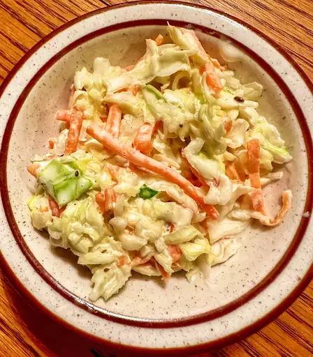

Copycat KFC Coleslaw

Delicious Coleslaw
For a slaw that looks similar to what you'd find at KFC, we suggest chopping the coleslaw mix before mixing with the dressing.
Ingredients
- 1 (14 ounce) package coleslaw mix
- ¼ cup finely chopped yellow onion
- ½ cup mayonnaise
- ¼ cup sugar
- 2 tablespoons milk
- 2 tablespoons buttermilk
- 2 tablespoons white wine vinegar
- ½ teaspoon salt
- ⅛ teaspoon black pepper
Steps
- Stir together coleslaw mix and onion in a large bowl.
- Whisk together mayonnaise, sugar, milk, buttermilk, vinegar, salt, and pepper in a second bowl until smooth. Pour dressing over slaw; stir well and chill at least 2 hours or up to overnight.
Back to Homepage